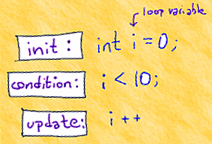

Definite Loops with for
C++ has a loop designed for repeating an operation a fixed number of times: it is called the for loop. You already met the range-based for loop in the last section. In this section we'll cover the traditional classic counter-controlled version.
The pattern used when you simply want to repeat an action n times is this:
times <- times to repeat
i <- 0
While i is less than times
Do action
i <- i + 1Here is this pattern translated into C++ using the for loop.
int times = 5; // repeat 5 times;
for (int i = 0; i < times; ++i)
{
cout << "Hello" << endl;
}The traditional for loop has three sections inside its parentheses:
- The initialization expression is evaluated once before the loop is entered. It creates and initializes the loop control variable, often named i. You may create other variables of the same type in this section. These variables have block scope; they are not available after the loop body. The initialization section ends with a semicolon.
- The test condition is first evaluated after the initialization. If true, the body is entered; if false, it is skipped. The condition also ends in a semicolon.
- The update expression is evaluated after the loop body is completed. It does not end in a semicolon. The update expression must change one of the variables in the condition, which is evaluated again, immediately following the update.
Often, the index or loop control variable is not used inside the body of the loop; it simply controls the number of repetitions. Single letter names such as i and j are conventional. If you want others to understand your code, you'll conform to this convention.
The loop shown here goes from 0 to less-than times, so we say that this loop uses asymmetric bounds. This means the lower bounds is included while the upper bound is excluded.
 This course content is offered under a
CC
Attribution Non-Commercial license. Content in this course
can be considered under this license unless otherwise noted.
This course content is offered under a
CC
Attribution Non-Commercial license. Content in this course
can be considered under this license unless otherwise noted.